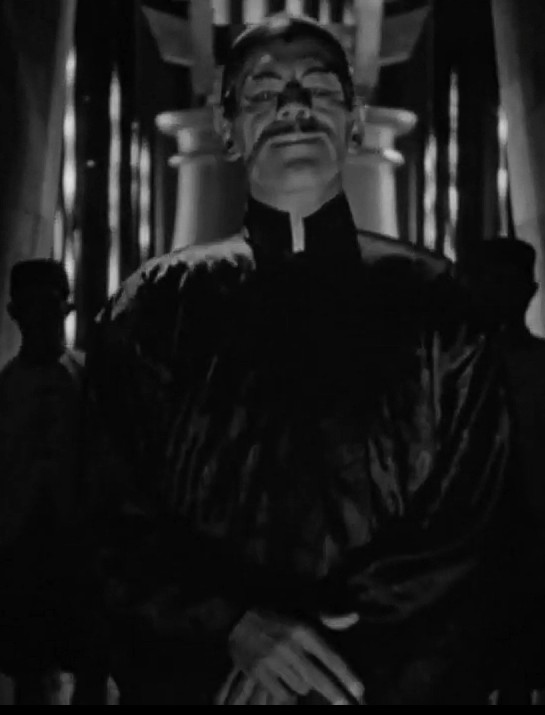
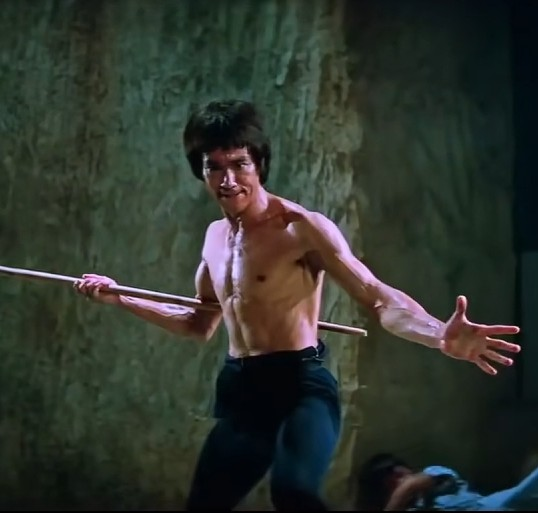
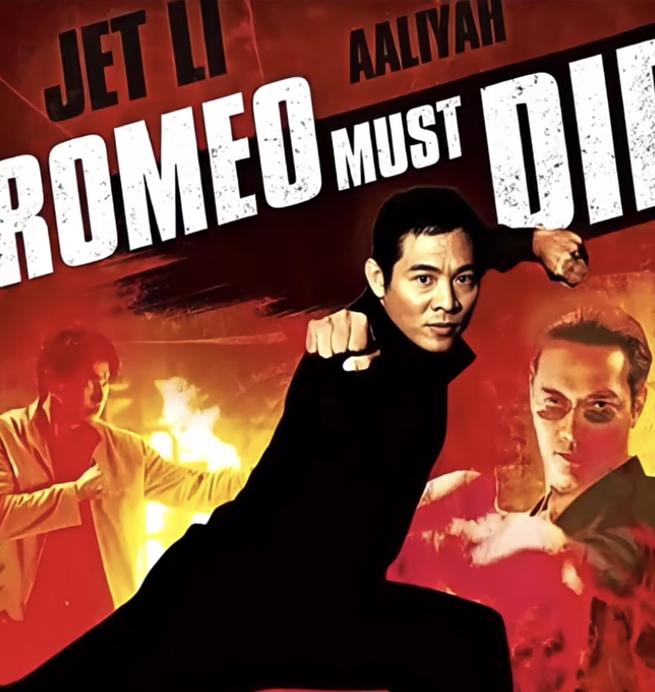
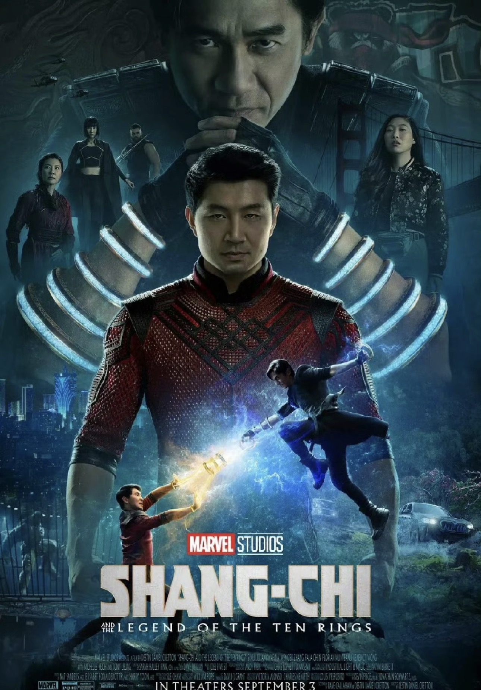

Image PlaceholderThe Mask of Fu Manchu (1932)
dir. Charles Brabin
Chinese masculinity as racialized threatUniversity Film Festival Project
Chinese Masculinity in Hollywood
From Yellow Peril to Negotiated Visibility
A five-film programme tracing how Hollywood has imagined, feared, desired, and restricted Chinese masculinity across nearly a century.
Enter the StageFestival Trailer
The trailer introduces the movement from threat, to spectacular body, to fantasy, denied intimacy, and negotiated visibility.
About the Festival
This film festival examines how Chinese masculinity has been repeatedly staged, restricted, and reimagined in Hollywood cinema. Rather than presenting a simple story of progress from negative stereotypes to positive representation, the programme traces a more unstable movement: Chinese male figures have appeared as racialized threats, spectacular fighting bodies, objects of Orientalist fantasy, action heroes denied full intimacy, and finally more emotionally legible protagonists whose visibility remains negotiated. Across five films, the festival asks how Hollywood makes Chinese masculinity visible, but also what kinds of desire, intimacy, and agency are still limited within that visibility.
At a Glance

Image Placeholderdir. Charles Brabin
Chinese masculinity as racialized threat
Image Placeholderdir. Robert Clouse
Chinese masculinity as spectacular bodydir. David Cronenberg
Fantasy, feminization, and misrecognition
Image Placeholderdir. Andrzej Bartkowiak
Heroic action, denied intimacy
Image Placeholderdir. Destin Daniel Cretton
A new hero under negotiated visibilityInteractive Feature
Threat
Director: Charles Brabin
A notorious villain seeks ancient power, while Western characters frame him as a racial and civilizational threat.
This film marks an early Hollywood image of Chinese masculinity as dangerous, excessive, and racially feared. The Chinese male figure is not allowed interiority or romance; he appears as a threat to be contained.
Audience Reflection
Full Programme
Threat
A notorious villain seeks ancient power, while Western characters frame him as a racial and civilizational threat.
Role in the programme: This film marks an early Hollywood image of Chinese masculinity as dangerous, excessive, and racially feared. The Chinese male figure is not allowed interiority or romance; he appears as a threat to be contained.
Body
A martial artist enters a deadly tournament, turning the Chinese male body into a source of global spectacle and cinematic power.
Role in the programme: Bruce Lee transformed the visibility of Chinese masculinity in Hollywood. Yet this visibility was largely attached to physical discipline, speed, and martial spectacle rather than romantic or emotional centrality.
Fantasy
A French diplomat becomes absorbed in a fantasy of the East, misrecognising both gender and cultural identity through his own Orientalist desires.
Role in the programme: The film complicates representation by showing how Chinese masculinity can be feminized, disguised, and misread through Western fantasy. It is not a simple stereotype, but a more unstable drama of desire, performance, and misrecognition.
Denied Intimacy
A Chinese action hero becomes central to the narrative through combat, loyalty, and sacrifice, but the film limits the full expression of interracial romance.
Role in the programme: The film shows that Hollywood could make a Chinese male hero powerful and likeable while still restricting his romantic desirability. Action becomes visible, but intimacy remains conditional.
Negotiated Visibility
A young man confronts family history, inherited power, and personal identity while entering the centre of a global superhero franchise.
Role in the programme: Shang-Chi offers a more emotionally legible and central Chinese/Asian male hero. However, this does not mean representation is fully resolved. His visibility is expanded, but still shaped by blockbuster conventions, market conditions, and negotiated cultural expectations.
Closing Reflection
This programme does not tell a story of simple progress. Instead, it asks viewers to consider how visibility itself can be conditional: Chinese masculinity may become more central, more heroic, and more emotionally legible, while still being shaped by older histories of racial fantasy, spectacle, and limitation.